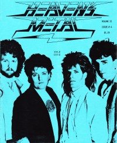

<!DOCTYPE PUBLIC "-//W3C//DTD XHTML 1.0 Transitional//EN" "http://www.w3.org/TR/1/DTD/1-transitional.dtd">
 xmlns="http://www.w3.org/1999/" xml:lang="en" lang="en">

<head>
<meta http-equiv="Content-Type" content="text; charset=utf-8" />
<title>Idle Cure profile - timeline view :: CMnexus</title><link rel="stylesheet" href="../articles.css" type="text/css" title="CMnexus" /><meta name="viewport" content="width=device-width" /><meta name="title" content="Idle Cure profile - timeline view :: CMnexus" /><meta name="color-scheme" content="light dark" /><meta name="description" content="A media coverage index of Idle Cure, including a discography, viewed as a timeline." /><meta name="theme-color" content="#669966" /><meta name="theme-color" content="#25282a" media="(prefers-color-scheme:dark)" /><meta name="keywords" content="Idle Cure, discography, albums" /><link rel="canonical" href="Idle_Cure" /><link rel="image_src" href="../images/covers/HM1987_Idle_pr20.jpg" /><link rel="help" href="../about/" /><link rel="home" href="../" />
<script type="application/ld+json">{"@context":"http:\/\/schema.org","@type":"MusicGroup","name":"Idle Cure","album":[{"@type":"MusicAlbum","datePublished":"1986","name":"Idle Cure"},{"@type":"MusicAlbum","datePublished":"1988","name":"Tough Love"},{"@type":"MusicAlbum","datePublished":"1990","name":"2nd Avenue"},{"@type":"MusicAlbum","datePublished":"1991","name":"Inside Out"},{"@type":"MusicAlbum","datePublished":"1992","name":"Breakaways"},{"@type":"MusicAlbum","datePublished":"1994","name":"Eclipse"}],"isFamilyFriendly":true,"image":[{"@type":"ImageObject","contentUrl":"http:\/\/cmnexus.org\/images\/covers\/HM1987_Idle_pr20.jpg","caption":"Idle Cure featured on Heaven's Metal, 1987"}]}</script>
<link rel="apple-touch-icon" type="image/png" href="../apple-touch-icon.png" />
</head>
<body bgcolor="#000067" text="#000000" link="#000066" vlink="#000066" alink="#660000" itemscope itemtype="http://schema.org/WebPage">
<table bgcolor="#FFFFFF" width="100%" cellspacing="0" cellpadding="8" class="p100pc" id="maintable">
<tr valign="top" class="">
<td bgcolor="#669966" colspan="2" class="navcolor noprint p0tnytny navtop" style="padding-bottom:0px" itemscope itemtype="http://schema.org/SiteNavigationElement">
<div  id="pagehead" class="tnytnytnyonlyin">
<b><a href="../"
title="CMnexus" border="0" class="img" align="center">CMnexus</a></b>
<span class="smalltnytny tnytnytnyonlyoff">: <i>Contemporary Christian culture, music, and media.</i></span>
</div>
<ul class="navbar nodisc din" style="padding-top:.5em;">
<li class="pr2em din mainnav" ><a title="Browse magazines" href="../magazines/">Magazines</a></li>
<li class="pr2em din mainnav" ><a title="Browse artists &amp; authors" href="index">Profiles</a></li>
<li class="din mainnav" ><a title="GMA Dove Award nominees and winner listings" href="../awards/Dove_Awards">Dove Awards</a></li>

</ul>

</td>
</tr>
<tr valign="top" class="vaT">
<td class="vaT" id="cocol" width="*">
<div class="vaT flL b600" itemprop="breadcrumb"><span class="printonly">cmnexus.org</span><a class="noprint tnytnyonlyoff" href="../" title="Front page of the CMnexus" itemprop="url"><span class="tdn">CM</span>nexus</a><span class="tnytnyonlyoff"> &rarr; </span><a href="index" title="Root index of all artists: Choose letter" rel="up up" itemprop="url"><span itemprop="name">Profiles</span></a> &rarr; <a href="I" title="All artists whose names begin with 'I'" rel="up" itemprop="url"><span itemprop="name">I</span></a></div><h1 class="sectiontitle clB mb0">Idle Cure</h1><div class="m600px m0px" itemscope itemtype="http://schema.org/MusicGroup"><table class="flR flNtnytny"><caption class="smcap"><b>On the cover</b></caption><tr><td align="center" class="lineC q3e pbia"><a href="../magazines/HM/1987/page1" title="Contents of Heaven's Metal 1987, v. 2, i. 4"></a><br />1987<br /><span class="magazine">Heaven's Metal</span></td></tr></table><h2 class="mt25pcempr mb1pr">Media coverage:</h2><ul class="mt0"><li class="neg15em">1987 in <span class="magazine"><a href="../magazines/HM/1987/page1" title="Contents of Heaven's Metal 1987, v. 2, i. 4">Heaven's Metal</a></span> "Idle Cure", by <a href="Doug_Van_Pelt/writing/page2" title="Writing credits for Doug Van Pelt, page 2">Doug Van Pelt</a> </li><li class="neg15em">1987 in <span class="magazine"><a href="../magazines/Holy_Metal/1987/page1" title="Contents of Holy Metal 1987, #2">Holy Metal</a></span> "Undrens Tid Är Inte Förbi…: Idle Cure" </li><li class="neg15em">Feb 1987 in <span class="magazine"><a href="../magazines/CCM/1987/page2" title="Contents of CCM Feb 1987, v. 9, i. 8">CCM</a></span> "Notebook: No Idle Cure", by <a href="Brian_Quincy_Newcomb/writing/page2" title="Writing credits for Brian Quincy Newcomb, page 2">Brian Quincy Newcomb</a> </li><li class="neg15em">Sum 1987 in <span class="magazine"><a href="../magazines/Harvest_Rock_Syndicate/1987/page2" title="Contents of Harvest Rock Syndicate Sum 1987, v. 2, i. 2">Harvest Rock Syndicate</a></span> "Idle Cure", by <a href="Paul_A_Schmitz/writing/page1" title="Writing credits for Paul A Schmitz, page 1">Paul A Schmitz</a> </li><li class="neg15em">Jul 1988 in <span class="magazine"><a href="../magazines/CCM/1988/page7" title="Contents of CCM Jul 1988, v. 11, i. 1">CCM</a></span> "Toys in the Band: Idle Cure" </li><li class="neg15em">Sep 1988 in <span class="magazine"><a href="../magazines/Notebored/1988/page1" title="Contents of Notebored Sep 1988">Notebored</a></span> "Idle Cure" </li><li class="neg15em">May 1990 in <span class="magazine"><a href="../magazines/Notebored/1990/page1" title="Contents of Notebored May 1990">Notebored</a></span> "Idle Cure" </li><li class="neg15em">Mar 1992 in <span class="magazine"><a href="../magazines/CCM/1992/page3" title="Contents of CCM Mar 1992, v. 14, i. 9">CCM</a></span> "Getting The Message: Abortion", by <a href="Steve_Rabey/writing/page7" title="Writing credits for Steve Rabey, page 7">Steve Rabey</a> </li><li class="neg15em">Jun 1994 in <span class="magazine"><a href="../magazines/The_Lighthouse/1994/page5" title="Contents of The Lighthouse Jun 1994, v. 3, i. 6">The Lighthouse</a></span> "Idle Cure", by <a href="J._Warner_Soditus/writing/page2" title="Writing credits for J. Warner Soditus, page 2">J. Warner Soditus</a> </li><li class="neg15em">Jul 1994 in <span class="magazine"><a href="../magazines/HM/1994/page4" title="Contents of Heaven's Metal Jul 1994, #48">Heaven's Metal</a></span> "The Past, The Present, and The Future of Idle Cure", by <a href="David_Muttillo/writing/page1" title="Writing credits for David Muttillo, page 1">David Muttillo</a> </li></ul><h2 id="albums" class="pbaa mt25pcempr mb1pr">Albums &amp; reviews:</h2><div itemprop="albums" class=""><div class="pbia"><span itemscope itemtype="http://www.schema.org/MusicAlbum"><span itemprop="datePublished">1986</span>: <span itemprop="name"><span class="album" title="The album 'Idle Cure' is by Idle Cure">Idle Cure</span></span></span><br />
<ul class="mt0"><li class="neg15em">Win 1987 in <span class="magazine"><a href="../magazines/Harvest_Rock_Syndicate/1987/page1" title="Contents of Harvest Rock Syndicate Win 1987, v. 2, i. 1">Harvest Rock Syndicate</a></span>, by <a href="Scott_J._Drachnik/writing/page1" title="Writing credits for Scott J. Drachnik, page 1">Scott J. Drachnik</a> </li><li class="neg15em">Jan 1987 in <span class="magazine"><a href="../magazines/Notebored/1987/page1" title="Contents of Notebored Jan 1987">Notebored</a></span> </li><li class="neg15em">Feb 1987 in <span class="magazine"><a href="../magazines/CCM/1987/page2" title="Contents of CCM Feb 1987, v. 9, i. 8">CCM</a></span>, by <a href="Brian_Quincy_Newcomb/writing/page2" title="Writing credits for Brian Quincy Newcomb, page 2">Brian Quincy Newcomb</a> </li><li class="neg15em">May 1987 in <span class="magazine"><a href="../magazines/Group/1987/page2" title="Contents of Group May 1987, v. 13, i. 5">Group</a></span>, by <a href="Stephen_Parolini/writing/page1" title="Writing credits for Stephen Parolini, page 1">Stephen Parolini</a> </li></ul>
</div><div class="pbia"><span itemscope itemtype="http://www.schema.org/MusicAlbum"><span itemprop="datePublished">1988</span>: <span itemprop="name"><span class="album" title="The album 'Tough Love' is by Idle Cure">Tough Love</span></span></span><br />
<ul class="mt0"><li class="neg15em">Jun 1988 in <span class="magazine"><a href="../magazines/HM/1988/page4" title="Contents of Heaven's Metal Jun 1988, #18">Heaven's Metal</a></span>, by <a href="Doug_Van_Pelt/writing/page5" title="Writing credits for Doug Van Pelt, page 5">Doug Van Pelt</a> </li><li class="neg15em">Oct 1988 in <span class="magazine"><a href="../magazines/CCM/1988/page10" title="Contents of CCM Oct 1988, v. 11, i. 4">CCM</a></span>, by <a href="Brian_Quincy_Newcomb/writing/page4" title="Writing credits for Brian Quincy Newcomb, page 4">Brian Quincy Newcomb</a> </li><li class="neg15em">Fall 1988 in <span class="magazine"><a href="../magazines/Harvest_Rock_Syndicate/1988/page2" title="Contents of Harvest Rock Syndicate Fall 1988, v. 3, i. 3">Harvest Rock Syndicate</a></span>, by <a href="Steve_Greenfield/writing/page1" title="Writing credits for Steve Greenfield, page 1">Steve Greenfield</a> </li><li class="neg15em">1989 in <span class="magazine"><a href="../magazines/Adonai_Metal_Rock/1989/page1" title="Contents of Adonai Metal Rock 1989, #2">Adonai Metal Rock</a></span> </li></ul>
</div><div class="pbia"><span itemscope itemtype="http://www.schema.org/MusicAlbum"><span itemprop="datePublished">1990</span>: <span itemprop="name"><span class="album" title="The album '2nd Avenue' is by Idle Cure">2nd Avenue</span></span></span><br />
<ul class="mt0"><li class="neg15em">Jun 1990 in <span class="magazine"><a href="../magazines/HM/1990/page3" title="Contents of Heaven's Metal Jun 1990, #25">Heaven's Metal</a></span>, by <a href="John_Wilson/writing/page1" title="Writing credits for John Wilson, page 1">John Wilson</a> </li><li class="neg15em">Sum 1990 in <span class="magazine"><a href="../magazines/Harvest_Rock_Syndicate/1990/page2" title="Contents of Harvest Rock Syndicate Sum 1990, v. 5, i. 2">Harvest Rock Syndicate</a></span>, by <a href="Steve_Greenfield/writing/page1" title="Writing credits for Steve Greenfield, page 1">Steve Greenfield</a> </li><li class="neg15em">Aug 1990 in <span class="magazine"><a href="../magazines/CCM/1990/page8" title="Contents of CCM Aug 1990, v. 13, i. 2">CCM</a></span>, by <a href="Jerry_Wilson/writing/page1" title="Writing credits for Jerry Wilson, page 1">Jerry Wilson</a> </li><li class="neg15em">May 1991 in <span class="magazine"><a href="../magazines/Adonai_Metal_Rock/1991/page1" title="Contents of Adonai Metal Roxx May 1991, #4">Adonai Metal Roxx</a></span> </li></ul>
</div><div class="pbia"><span itemscope itemtype="http://www.schema.org/MusicAlbum"><span itemprop="datePublished">1991</span>: <span itemprop="name"><span class="album" title="The album 'Inside Out' is by Idle Cure">Inside Out</span></span></span><br />
<ul class="mt0"><li class="neg15em">Jan 1992 in <span class="magazine"><a href="../magazines/CCM/1992/page1" title="Contents of CCM Jan 1992, v. 14, i. 7">CCM</a></span>, by <a href="Ross_E_Cluver/writing/page1" title="Writing credits for Ross E Cluver, page 1">Ross E Cluver</a> </li><li class="neg15em">Jan 1992 in <span class="magazine"><a href="../magazines/HM/1992/page1" title="Contents of Heaven's Metal Jan 1992, #33">Heaven's Metal</a></span>, by <a href="Doug_Van_Pelt/writing/page16" title="Writing credits for Doug Van Pelt, page 16">Doug Van Pelt</a> </li></ul>
</div><div class="pbia"><span itemscope itemtype="http://www.schema.org/MusicAlbum"><span itemprop="datePublished">1992</span>: <span itemprop="name"><span class="album" title="The album 'Breakaways' is by Idle Cure">Breakaways</span></span></span><br />
<ul class="mt0"><li class="neg15em">May 1992 in <span class="magazine"><a href="../magazines/HM/1992/page3" title="Contents of Heaven's Metal May 1992, #35">Heaven's Metal</a></span>, by <a href="Doug_Van_Pelt/writing/page17" title="Writing credits for Doug Van Pelt, page 17">Doug Van Pelt</a> </li></ul>
</div><div class="pbia"><span itemscope itemtype="http://www.schema.org/MusicAlbum"><span itemprop="datePublished">1994</span>: <span itemprop="name"><span class="album" title="The album 'Eclipse' is by Idle Cure">Eclipse</span></span></span><br />
<ul class="mt0"><li class="neg15em">May 1994 in <span class="magazine"><a href="../magazines/HM/1994/page3" title="Contents of Heaven's Metal May 1994, #47">Heaven's Metal</a></span>, by <a href="Doug_Van_Pelt/writing/page21" title="Writing credits for Doug Van Pelt, page 21">Doug Van Pelt</a> </li><li class="neg15em">Jun 1994 in <span class="magazine"><a href="../magazines/The_Lighthouse/1994/page5" title="Contents of The Lighthouse Jun 1994, v. 3, i. 6">The Lighthouse</a></span>, by <a href="Roger_Appelinski/writing/page1" title="Writing credits for Roger Appelinski, page 1">Roger Appelinski</a> </li></ul>
</div></div><h2 class="pbaa mt25pcempr mb1pr">Books about Idle Cure</h2><ul class="mt0">
<li itemscope itemtype="http://schema.org/Book" class="neg15em">"<span>Idle Cure</span>"  in <i itemprop="name" class="book">The Encyclopedia of Contemporary Christian Music</i> (<span itemprop="author"><a href="Mark_Allan_Powell" class="profile"  title="Profile of Mark Allan Powell">Mark Allan Powell</a></span>, <span itemprop="datePublished">2002</span>).</li>
</ul></div></td><td class="noprint lineC" style="min-width:150px;" width="150px" itemscope itemtype="http://schema.org/WPSideBar" id="rsidebar"><div><b>CMnexus</b> <i>(noun)</i><br />The magazine index<br />of modern music<br />and Christianity<br /></div></td></tr><tr class="smalltnytny" itemscope itemtype="http://schema.org/WPFooter"><td id="footer" class="navcolor pbnw" colspan="2"><div class="lineC">&copy; 2011 CMnexus. Last updated May 2025.<span class="printonly"> Contact: </span> <span class="noprint"> Rants and other correspondence to: </span> <!--BL-->editor -AT- cmnexus<span class="noshow"><!--BL--></span> -D&Oslash;T- org <a title="About the Nexus, general information" href="../about/" class="noprint">About</a></div></td></tr></table></body><>